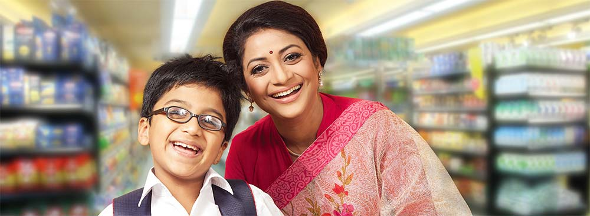
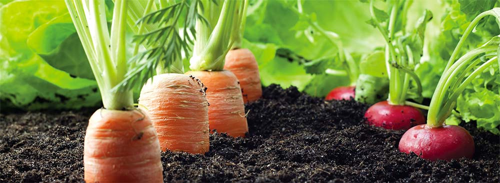
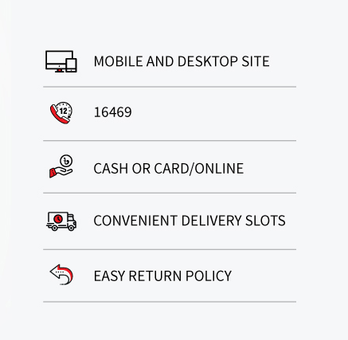
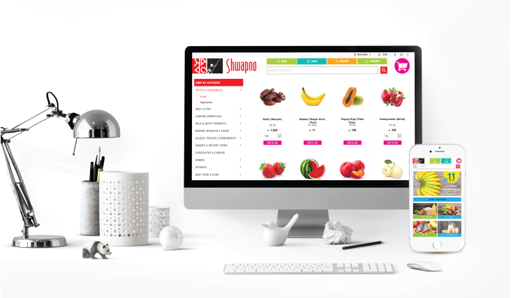

Discover a world of freshness, warm service and value With over 60 outlets, Groceries Shop is the largest grocery chain in Bangladesh and Best Retail Brand in the country. As part of the Groceries Shop family, your satisfaction and wellbeing are what we work diligently to ensure. Most of all, we want to always leave you with a smile, whether you visit our stores or order online, and we are happy to serve you in whatever way we can.So expect more. Come and discover a different shopping experience. Welcome to Groceries Shop!
Since 2008, Groceries Shop has been providing our customers with the very best fresh produce, local and imported household needs, as well as an exquisite range of fashions, home accessories, appliances, and more. In 2016, Groceries was recognized as the Best Retail Brand in the country, as awarded jointly by Kantar Millward Brown and Bangladesh Brand Forum.
By partnering directly with farmers, Groceries is changing the way food is brought from pristine fields to your table, to give you that authentic farm fresh taste. Our dedicated food safety and nutrition teams make sure that what you take back to your family is safe, healthy and wholesome. Groceries has also been a leader in the movement against unsafe food and a major advocate in promoting healthy living.
In 2016, Groceries joined Global G.A.P, the leading private sector body addressing the crucial objectives of ensuring safe, sustainable agriculture worldwide. Our partnerships with thousands of suppliers and growers also ensure fair prices and inclusive growth for all our stakeholder
 Groceries is dedicated to ensuring your complete satisfaction, and we are always happy to hear from you. If you have any questions or comments, or just want share your thoughts,
Our Own Products Cooking Essentials Rice Oil Flour Vegetables Fruits Fish Meat Chocolates & Candies Baby Food & Care Breads, Biscuits & Cakes Milk & Dairy Products Watches Mens Shoes Accessories Home Appliances Sports Personal Care Stationery Gift & Toys Sauces & Pickles